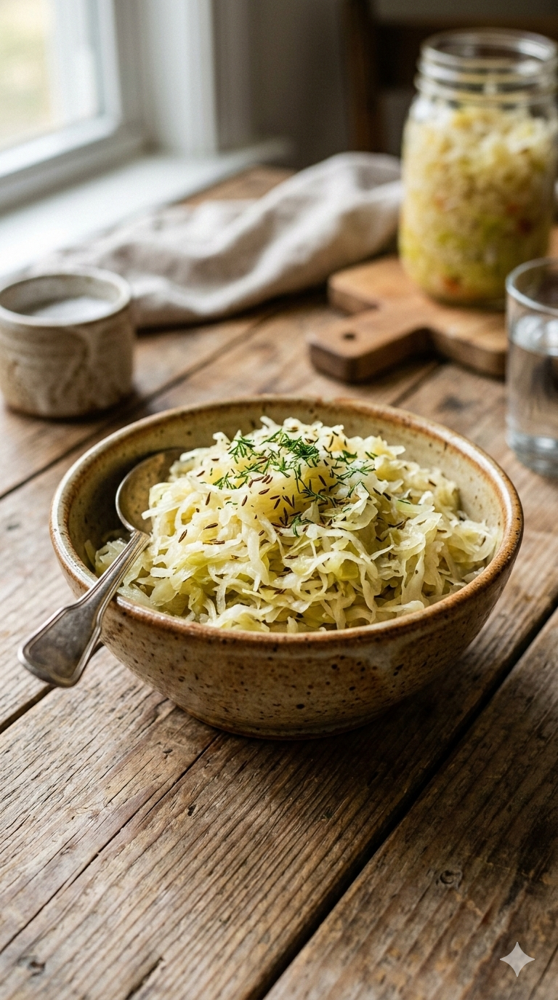
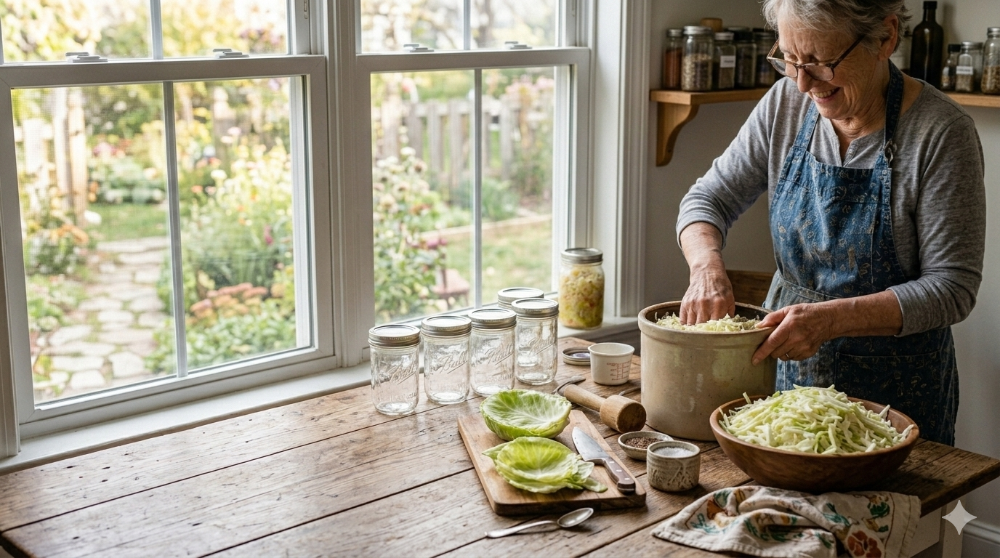

Cuci bersih toples kaca lalu sterilkan dengan air panas, setelah itu keringkan.
Cuci kol hingga bersih, lalu iris tipis.
Masukkan irisan kol ke dalam baskom dan taburkan garam secukupnya.
Remas kol yang sudah ditaburi garam sekitar 5 sampai 10 menit hingga airnya keluar, lalu tempatkan ke dalam toples kaca steril.
Usahakan untuk menekan-nekan irisan kol saat dimasukkan ke dalam toples kaca.
Campurkan air sisa remasan kol dengan bawang putih atau dill ke dalam toples, lalu tutup toples dengan rapat. Pastikan kol benar-benar terendam air.
Diamkan di suhu ruang selama 1 sampai 2 hari hingga terfermentasi sempurna, lalu letakkan dalam kulkas.
